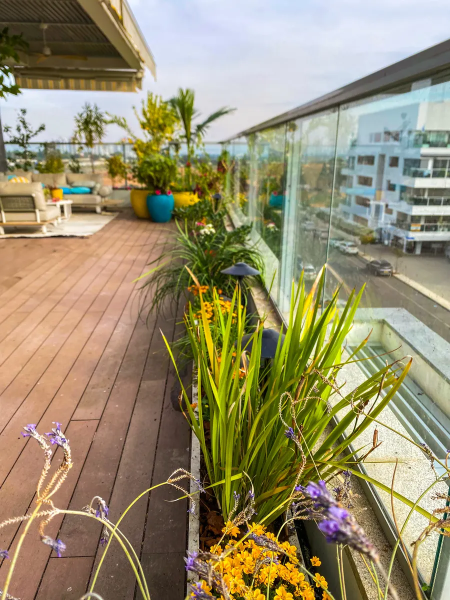

הפרויקטים שלנו
גינות שהתחילו על הנייר
קרקע, מרפסות, גגות ועסקים — כל אחת התחילה מתכנית





הקונספט, הצמחייה, ההשקיה והתקציב נסגרים על הנייר — כדי שהביצוע יהיה חלק והתוצאה תחזיק שנים.
שלחו הודעה עכשיועונים בהקדם, בלי התחייבות
לפי מה שהפרויקט שלכם באמת צריך. לא יותר, לא פחות
תכנית שלמה לגינה: קונספט, צמחייה, השקיה, חומרים ופריסה. עד הפרט האחרון
פתרון לאזור אחד או לשאלה אחת. כשלא צריך תכנית שלמה, רק החלטה נכונה
פירוט מסודר של צמחים, חומרים ועבודות. להשוואת הצעות ולביצוע מדויק
הפרויקטים שלנו
קרקע, מרפסות, גגות ועסקים — כל אחת התחילה מתכנית

כל תכנית שלנו כבר עברה דרך הידיים שלנו בשטח. אין הפתעות בביצוע
לא רק אסתטיקה. רקע מדעי בהתאמת צמחייה לאקלים, לקרקע ולמים
שמש, רוח, מצע וניקוז נמדדים לפני שנבחר צמח אחד
כל סעיף מפורט: מה, כמה ולמה. אפשר להשוות, אפשר לשאול
מי שמצייר את התכנית הוא מי שעומד בשטח כשהיא קמה
קרקע, מרפסות, גגות ועסקים. ראינו כמעט כל מצב שטח
תכנון גינות בתל אביב וגוש דן: גן פרא מציעה שלושה מסלולי תכנון — תכנון מלא לגינה שלמה, תכנון ממוקד לאזור או לשאלה אחת, וכתב כמויות למי שכבר יודע בדיוק מה הוא רוצה. התכנון מתאים לגינות קרקע, מרפסות, פנטהאוזים ועסקים.
התכנית שלכם, ההחלטה שלכם: תכנית מפורטת עם כתב כמויות מאפשרת לכם להשוות הצעות ביצוע. רוב הלקוחות ממשיכים איתנו — אבל זו בחירה, לא כבילה.
בואו נדבר
שלחו כמה תמונות של השטח, נחזור אליכם עם כיוון ראשוני לשיחה
שלחו הודעה עכשיועונים בהקדם · בלי התחייבות · או מלאו שאלון אפיון קצר ←